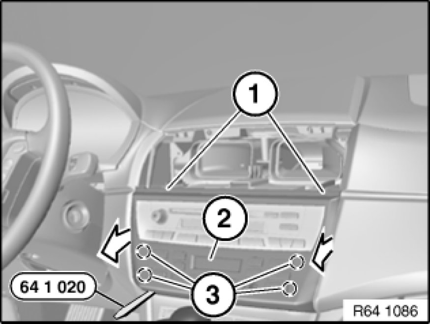

Removing and Installing Control Panel for Heater - A/C System (Replacing, Automatic Air Conditioning)
64 11 377 - Removing and installing control panel for heater - A/C system (replacing, automatic air conditioning)

Special tools required:
- 64 1 020 64 1 020 Release Hook

Important!
Read and comply with notes on protection against electrostatic damage (ESD protection) 61 35 ... Notes on ESD Protection (Electro Static Discharge).

Necessary preliminary tasks:
- Remove center fresh air grill Removing and Installing/Replacing Center Fresh-Air Grill
- Remove ignition key from ignition switch
- Pull fuse 63 from distribution box in glovebox

Release screws (1).
Unclip control panel for heater - A/C system (2) with special tool 64 1 020 64 1 020 Release Hook at retaining points (3) all round and pull back.
Unlock associated plug connections and disconnect.
Remove control panel for heater - A/C system (2).

Replacement:
Carry out programming/coding Programming and Relearning.